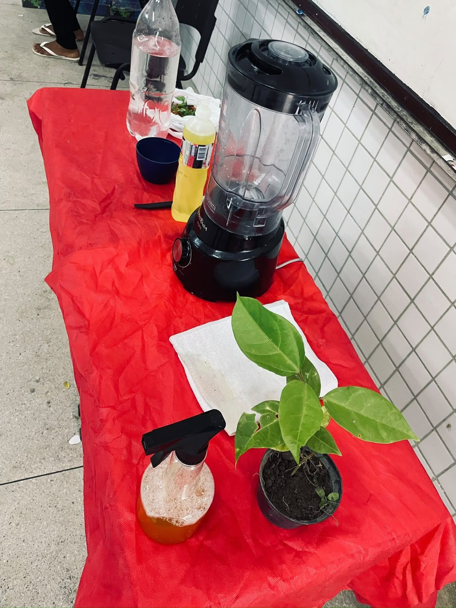

Experimento
BioFire Tech
De forma simples, a turma bateu no liquidificador detergente, água e pimenta-malagueta. A mistura serve para proteger as plantas contra pragas.
Lima Castro Projeto
PIBIC Jr
Feira de Ciências 2026
Na Feira de Ciências 2026, a turma representou o estado do Amapá e apresentou o BioFire Tech, uma mistura feita com pimenta para proteger as plantas contra pragas.
Experimento

De forma simples, a turma bateu no liquidificador detergente, água e pimenta-malagueta. A mistura serve para proteger as plantas contra pragas.
Cientistas
Pesquisadores citados pela turma.
IFAP · Campus Laranjal do Jari
Bióloga e docente do Instituto Federal do Amapá (IFAP), Campus Laranjal do Jari, atua em Ecologia Vegetal.
Fotos
Toque em uma foto para ver em tamanho maior.